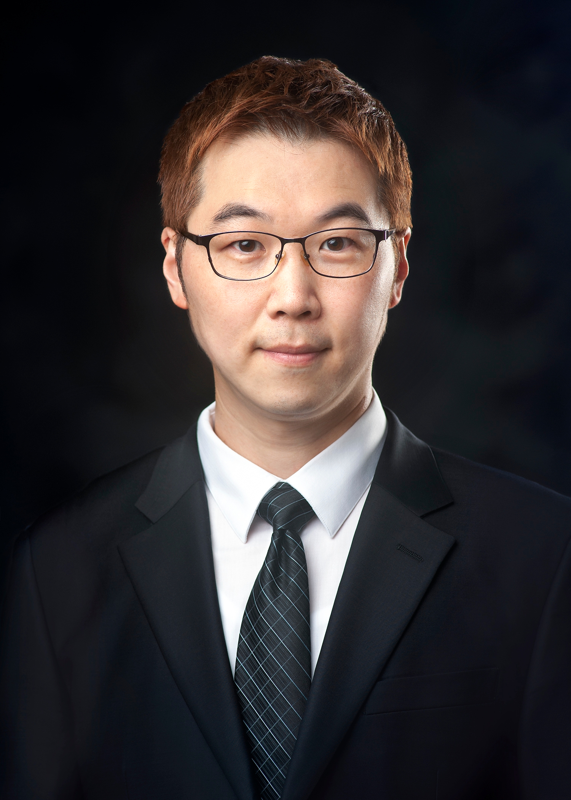
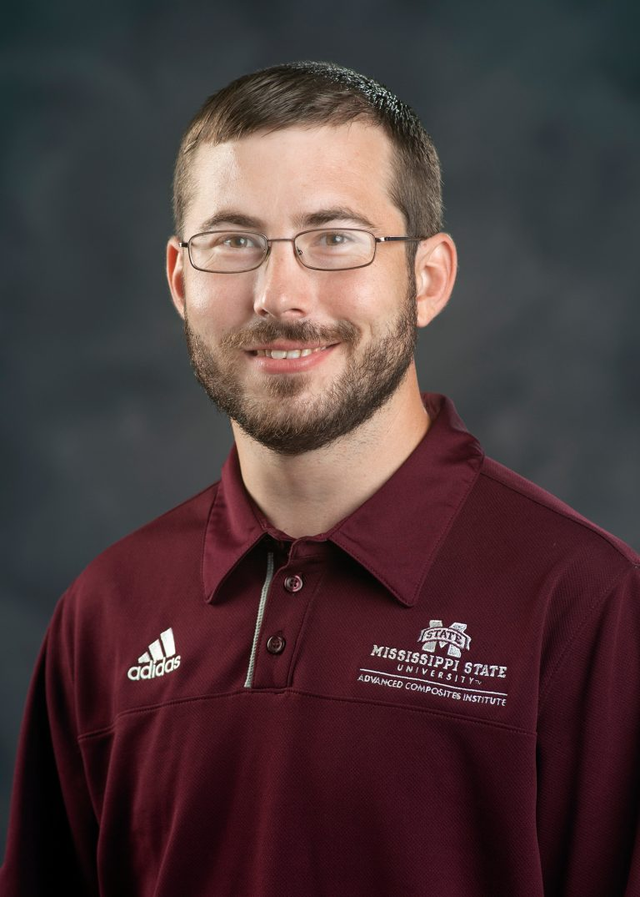

Technical Advisors
Ernesto Borrego, Ph.D.
Industry Advisor
eborrego@handtechllc.com
Dr. Ernesto Borrego is the founder of Hand Technologies LLC and an expert in high char yielding resin technology. Dr. Borrego was instrumental in experimental design and advisement of our group.

Han-Gyu Kim, Ph.D.
Faculty Advisor
hkim@ae.msstate.edu
Dr. Kim served as one of our primary advisors during this project. He helped us select the appropriate standard to which we would create our coupons according to, so that in the future our parts can undergo tensile testing. He also assisted and provided material to determine the correct ratio of resin to fiber mass.
Supplimentary
Matthew Roberson
ACI Research Engineer II
mroberson@aci.msstate.edu
Matthew Roberson was pivotal to this project. He operated the heat press at ACI, which was critical for the compression molding of our coupons. Through testing, he also assisted in the troubleshooting of failures and helped with optimizing our manufacturing process.

Brandon Warner
MSU Laboratory Engineer
bkw103@msstate.edu
After the mold was initially designed, Mr. Brandon Warner, Laboratory Engineer at the Mississippi State University Aerospace Department, was consulted for his expertise in composite manufacturing. On his advice, a three-degree draft angle was added to the coupon bed on the female half of the mold. Additionally, Mr. Warner suggested to incorporate a method to access the bottom side of the coupon cured in the mold to aid removal. As such, two removable pieces were added, one on each end of the female mold. His experience with metal machining also helped reduce the material needed to manufacture the mold, as he identified that the post of the female mold could be made with slip-fit pins. Mr. Warner also helped align and fit the mold after it was manufactured. The enire team would like to thank Mr. Brandon Warner on everything he has done to help us in this project.